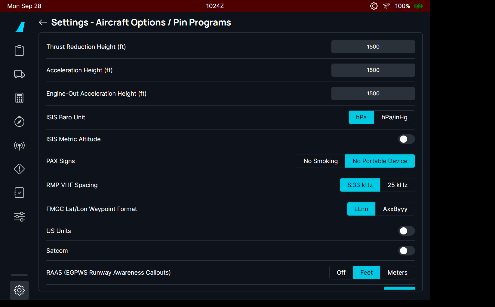
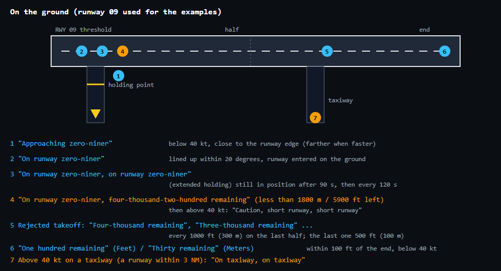
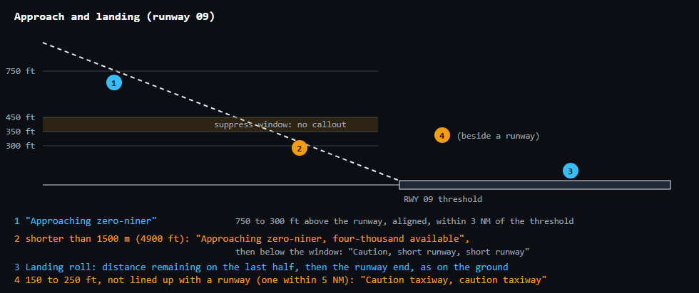
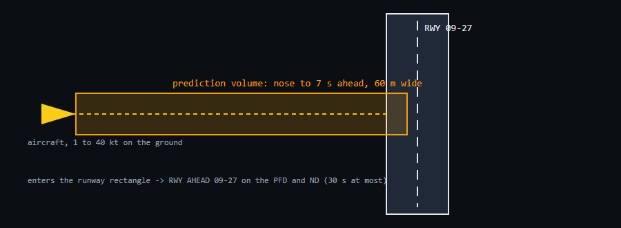
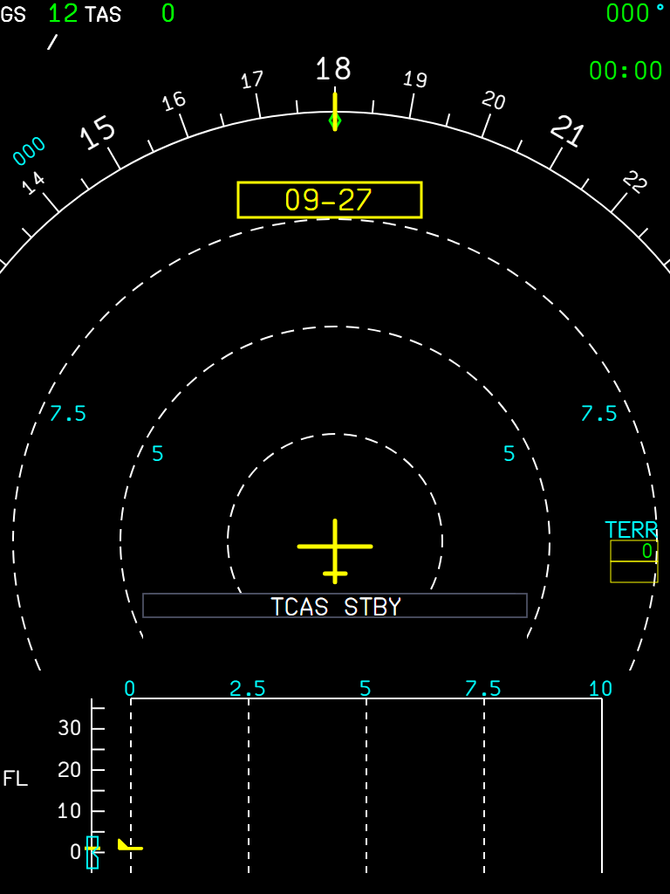
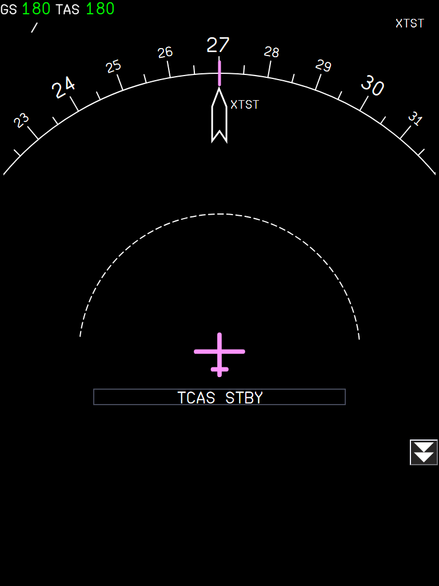
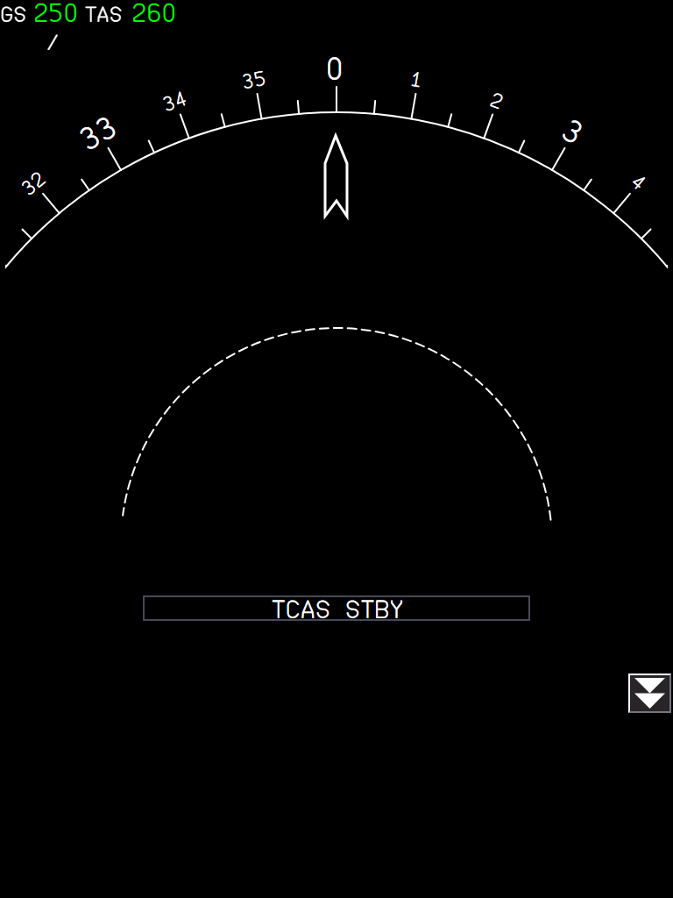
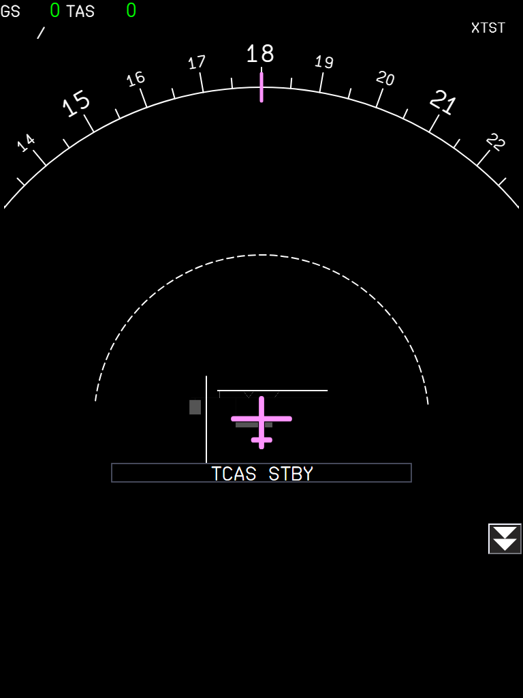

The A32NX gets the Honeywell RAAS runway callouts, and the A380X OANS gives RWY AHEAD without a Navigraph map, loads the FCOM default airport by itself and shows one airport per side
AircraftA32NX (RAAS) and A380X (OANS)Where to find itA32NX: flyPad > Settings > Aircraft Options / Pin Programs > RAAS. A380X: ND at the ZOOM range or in PLAN (OANS), ARPT SEL panel; RWY AHEAD on the PFD and NDBranchcore/oans-btv-raas, based on master (FlyByWire master 255546cb0 merged in); independent.StatusRAAS and RWY AHEAD without a map tested in the sim by the user: OK (2026-10-02). OANS default airport tested by the user: OK (2026-09-27). One airport per side: not sim-tested.PicturesflyPad setting and the Captain ND from the local browser harness, running the build installed in the sim (RAAS callouts drawn as diagrams from the code; the RWY AHEAD advisory and the test airport XTST set up by the harness). No pictures for the airport per side.
1. A32NX RAAS runway awareness callouts
2. A380X RWY AHEAD without an airport map
3. A380X OANS default airport
4. A380X one OANS airport per side
1. A32NX RAAS runway awareness callouts
Aircraft: A32NX | Where: flyPad > Settings > Aircraft Options / Pin Programs > RAAS | Status: Tested in the sim by the user: first callout heard 2026-09-26; "RAAS is working well" on 2026-10-02 (approaching on the ground and in the air, extended holding, distance remaining, volume).
What it is for
RAAS is an option of the A320's Honeywell EGPWS (A320 FCOM GEN aircraft configuration, used as a line-up aid in PRO-NOR-SOP-11 TAKEOFF RUNWAY CONFIRM). It tells the crew which runway they are approaching or are on, warns of a taxiway takeoff or landing, and calls the distance remaining. It needs no airport map: the runways come from the sim's airport database.
Turning it on

Figure 1. flyPad Settings > Aircraft Options / Pin Programs.Figure 2. RAAS: Off, Feet (default) or Meters. The unit is the one of the distance callouts.
The callouts run while the EGPWC is powered (AC BUS 1) and the GPWS SYS pushbutton is not OFF.
The EGPWS aural alerts (e.g. "TOO LOW TERRAIN", "GLIDE SLOPE") have priority: RAAS waits for them.
The voice is played word by word.
On the ground

Figure 3. The ground callouts, in blue the advisories, in amber the cautions.Diagram drawn for this manual: not representative of the in-game UI, reference for the explanation only.
Situation
What you should see
Taxiing towards a runway (below 40 kt)
"Approaching" and the runway end nearest to where you will enter; "Approaching runways" when two at once.
Lining up
"On runway" and the runway, once, when the runway was entered on the ground.
Lining up with less than 1800 m (5900 ft) ahead
The length remaining is added; at the start of the roll (above 40 kt), "Caution, short runway".
Holding on the runway for 90 s
"On runway ..." twice, then every 120 s while you stay.
Starting a takeoff roll on a taxiway (above 40 kt)
"On taxiway, on taxiway".
Rejected takeoff (ground speed down 7 kt from its maximum)
The distance remaining on the last half of the runway.
Slow near the end (within 100 ft, below 40 kt)
"One hundred remaining" (Feet) or "Thirty remaining" (Meters).
Approach and landing

Figure 4. The approach callouts and the suppress window.Diagram drawn for this manual: not representative of the in-game UI, reference for the explanation only.
Situation
What you should see
Between 750 and 300 ft, lined up, within 3 NM
"Approaching" and the runway, once. Not between 450 and 350 ft (the Airbus suppress window, where the crew is busy with the auto callouts).
The runway is shorter than 1500 m (4900 ft)
The available length is added; below the window: "Caution, short runway".
150 to 250 ft, not lined up with any runway
"Caution taxiway, caution taxiway".
Landing roll
The distance remaining on the last half: every 1000 ft (Feet) or 300 m (Meters), the last one at 500 ft / 100 m; then the runway end.
Limitations and why
Limitation
Why
What to do
Only runways known to the sim.
The runways come from the MSFS airport database, not from an airport map: no taxiway geometry, so "on taxiway" is judged as "not aligned with a runway".
-
One synthetic voice.
The clips are generated with the Piper text-to-speech engine (voice trained on the public-domain LJ Speech dataset); its licence allows the clips in the aircraft.
-
No RAAS on the A380X.
The A380X uses the OANS runway alerts instead (see A380X RWY AHEAD without an airport map below).
-
NoteThe A380X OIT flyPad settings pages carry the same RAAS option entry, only so that the A380X builds: the A380X has no RAAS.
How to use
flyPad > Settings > Aircraft Options / Pin Programs > RAAS: Feet (the default) or Meters for the distance callouts, Off to remove them.
Keep the GPWS SYS pushbutton on (not OFF): RAAS is part of the EGPWS.
Taxi, take off and land as usual: listen to the callouts.
How to test
#
Do this
Expected result
1
A32NX on the ground at an airport, AC BUS 1 powered, GPWS SYS not OFF, RAAS set to Feet. Taxi towards a runway below 40 kt.
"Approaching" and the runway name (for example "Approaching zero six right") before the holding point.
2
Line up on the runway.
"On runway" and the runway name, once.
3
Stay lined up for 90 seconds.
"On runway ..." twice, then again every 120 s while you stay.
4
On a runway shorter than 1800 m (5900 ft): line up.
The length remaining is added; above 40 kt, "Caution, short runway".
5
Start a takeoff roll on a taxiway (above 40 kt).
"On taxiway, on taxiway".
6
Reject a takeoff (slow down by 7 kt or more from the maximum ground speed).
The distance remaining on the last half of the runway.
7
In flight, final approach lined up with the runway, within 3 NM, between 750 and 300 ft.
"Approaching" and the runway, once; never between 450 and 350 ft.
8
Landing roll.
Distance remaining every 1000 ft on the last half (last one at 500 ft), then the runway end.
9
Set RAAS to Meters and land again.
Distance remaining every 300 m, the last one at 100 m.
10
Set the GPWS SYS pushbutton OFF, or RAAS Off.
No more RAAS callouts.
2. A380X RWY AHEAD without an airport map
Aircraft: A380X | Where: PFD and ND, automatic while taxiing | Status: Tested in the sim by the user: OK (2026-10-02, without a Navigraph map). 4 unit tests.
What it is for
While taxiing, the A380 OANS warns the crew before the aircraft enters a runway: RWY AHEAD with the runway name, on the PFD and the ND. In FBW this advisory came from the Navigraph airport map (AMDB): without a Navigraph subscription, or at an airport without a map, it never came. Now, while no airport map is loaded, the OANS uses the runways of the sim's own airport database with the same rule.
The rule

Figure 5. The prediction volume: from the nose to 7 seconds ahead at the current ground speed, 60 m wide. When it reaches a runway, RWY AHEAD appears for that runway.Diagram drawn for this manual: not representative of the in-game UI, reference for the explanation only.
On the ground, from 1 to 40 kt.
The advisory stays at most 30 s, and goes when the aircraft is on the runway.
With an airport map loaded, nothing changes: the map is used as before.
What it looks like

Figure 6. The ND advisory: the runway name in a yellow box at the top (here 09-27, when the aircraft taxis south towards runway 09/27). The PFD shows RWY AHEAD too.
What to expect
Situation
What you should see
Taxiing towards a runway, no Navigraph map
RWY AHEAD with the runway name, up to 30 s.
Taxiing towards a runway, with the Navigraph map
RWY AHEAD from the map (as before).
Stopped, or above 40 kt
No advisory.
On the runway
The advisory goes.
Limitations and why
Limitation
Why
What to do
Runway rectangles only.
The sim database gives each runway as a rectangle (threshold, length, width); displaced thresholds and runway shapes of the airport map are not known.
-
Shares its runway search with the A32NX RAAS.
One runway module (sim airport database) serves both; both are on this branch.
-
How to use
Nothing to set: taxi as usual. Before entering a runway, RWY AHEAD shows on the PFD and the ND with the runway name.
With the Navigraph airport map loaded the advisory comes from the map; without it, from the sim runways.
How to test
#
Do this
Expected result
1
A380X on the ground, without a Navigraph airport map (flyPad not linked to Navigraph, or an airport not in the airport database). Taxi towards a runway between 1 and 40 kt.
About 7 seconds before the nose reaches the runway: RWY AHEAD on the PFD, and the runway name in a yellow box at the top of the ND.
2
Stop before the runway.
The advisory goes after 30 s at most; no new one while stopped.
3
Taxi onto the runway.
The advisory goes once the aircraft is on the runway.
4
Repeat with the Navigraph map loaded.
RWY AHEAD as before, from the map.
3. A380X OANS default airport
Aircraft: A380X | Where: ND at ZOOM range or PLAN; OANS ARPT SEL | Status: Tested in the sim by the user: OK (2026-09-27). 4 unit tests.
What it is for
The OANS draws the airport around the aircraft on the ND. The FCOM (DSC-34-10-70-20, MOVING AIRPORT MAP) says no manual selection is needed: the OANS shows a default airport. FBW loaded the nearest airport on ground, but in flight only the destination (within 50 NM, at any height), and a manual selection stopped the automatic choice for 10 minutes. Now the FCOM rules apply.
The rules
ND mode
Default airport
ARC, ROSE-NAV (on ground)
The airport where the aircraft is.
ARC, ROSE-NAV (in flight)
The origin, destination or alternate of the FMS while the aircraft is inside its virtual cylinder: 20 NM radius, 5000 ft above the airport. The OANS keeps it while the aircraft stays in the cylinder.
PLAN (in flight)
The origin if it is closer than 50 NM, otherwise the destination; the destination when origin and destination are less than 300 NM apart.
Manual (ARPT SEL)
Only in PLAN: another airport can be displayed. It stays until the ND leaves PLAN, or the aircraft lands or takes off. In ARC / ROSE-NAV the OANS says SET PLAN MODE.
Each ND has its own OANS and its own airport (see A380X one OANS airport per side below): the rules apply to each ND by itself.
What it looks like

Figure 7. In flight, 12 NM from the destination XTST at 3000 ft: the destination loads by itself (name top right; the arrow points to the airport, still outside the zoom range).

Figure 8. 30 NM away at 9000 ft: outside the cylinder, no airport is loaded.

Figure 9. On ground at XTST: the current airport, with the aircraft at its gate.
What to expect
Situation
What you should see
On ground
The airport where you are, whatever the flight plan.
Climbing out of the origin
The origin until you leave its 20 NM / 5000 ft cylinder, then nothing (or the alternate / destination when inside theirs).
Approach to the destination
The destination from 20 NM and 5000 ft above it.
Diversion to the alternate
The alternate from 20 NM and 5000 ft above it.
ARPT SEL in PLAN
Your airport until you leave PLAN, land or take off.
No present position
No automatic airport.
Limitations and why
Limitation
Why
What to do
Needs the Navigraph airport database.
The OANS map is the Navigraph AMDB.
Link Navigraph in the flyPad.
The Captain and F/O NDs can show different airports.
Each side has its own OANS (FCOM DSC-34-10-70-10); see the airport per side below.
-
The destination arrow (5 NM range, map out of range) is FBW's.
Not part of this change.
-
How to use
Set the ND to ARC or ROSE-NAV and turn the range knob to ZOOM: the OANS shows the default airport by itself.
To look at another airport: ND in PLAN, open the OANS ARPT SEL panel, choose the airport. It stays until the ND leaves PLAN, or the aircraft lands or takes off.
How to test
#
Do this
Expected result
1
A380X on the ground at an airport with a Navigraph airport map; ND ARC, range ZOOM.
The OANS shows the airport where you are, whatever the flight plan.
2
Take off and climb out (ND ARC ZOOM).
The origin stays until you leave its 20 NM / 5000 ft cylinder, then no airport.
3
Approach the destination of the FMS flight plan.
The destination loads by itself from 20 NM and 5000 ft above it.
4
In flight, ND in PLAN.
The origin if it is closer than 50 NM, else the destination (the destination when origin and destination are less than 300 NM apart).
5
In PLAN, choose another airport with ARPT SEL, then set the ND back to ARC.
Your airport while in PLAN; back in ARC ZOOM, the default airport again.
6
In ARC or ROSE-NAV, try ARPT SEL.
The OANS asks SET PLAN MODE.
4. A380X one OANS airport per side
Aircraft: A380X | Where: Captain and F/O NDs (OANS) | Status: Not sim-tested.
What it is for
A380 FCOM DSC-34-10-70-10: there is a Captain's OANS (ADIRS 1, MMR 1, FMS 1) and a First Officer's OANS (side 2), each shown on its own ND. FBW loaded one airport for both NDs, so an airport chosen on one side replaced the airport of the other. Now each side displays its own airport.
What you should see
Situation
What you should see
Both NDs at ZOOM on the ground
Each OANS shows the current airport (each finds it by itself).
F/O ND in PLAN, another airport chosen with ARPT SEL
The F/O ND shows that airport; the Captain ND keeps its own airport.
PLAN default airport
Follows the mode of that ND only (before, it also looked at the other ND).
RWY AHEAD
Still one advisory for the aircraft, computed by the Captain side OANS: from its airport map when the aircraft is within that airport, else from the sim runways.
An airport unloaded on one side
The BTV runway and exit selection is cleared only if it was made on that side.
Limitations and why
Limitation
Why
What to do
The runway crossing and flag events are not split by side.
An item of the other side's airport is not found on this side's map.
-
RWY AHEAD comes from the Captain side only.
It is one advisory for the aircraft (one PFD / ND message word).
-
How to use
Use each ND's OANS as usual: ZOOM range for the default airport, PLAN + ARPT SEL for another one.
Each pilot can look at a different airport without changing the other's map.
How to test
#
Do this
Expected result
1
A380X on the ground at an airport with a Navigraph airport map. Both NDs ARC, range ZOOM.
Both NDs show the current airport.
2
Set the F/O ND to PLAN and choose another airport with the F/O OANS ARPT SEL.
The F/O ND shows the chosen airport; the Captain ND still shows the current airport.
3
Set the Captain ND to PLAN and choose a third airport.
Each ND shows its own choice.
4
Set both NDs back to ARC ZOOM.
Both go back to the current airport.
5
Select a BTV runway and exit on the Captain OANS, then unload the airport on the F/O side.